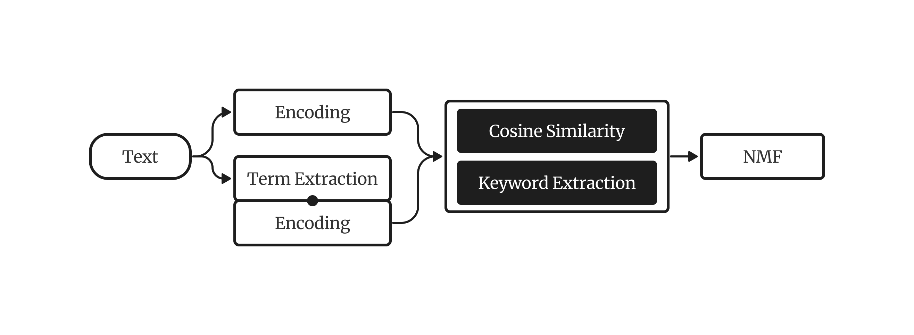
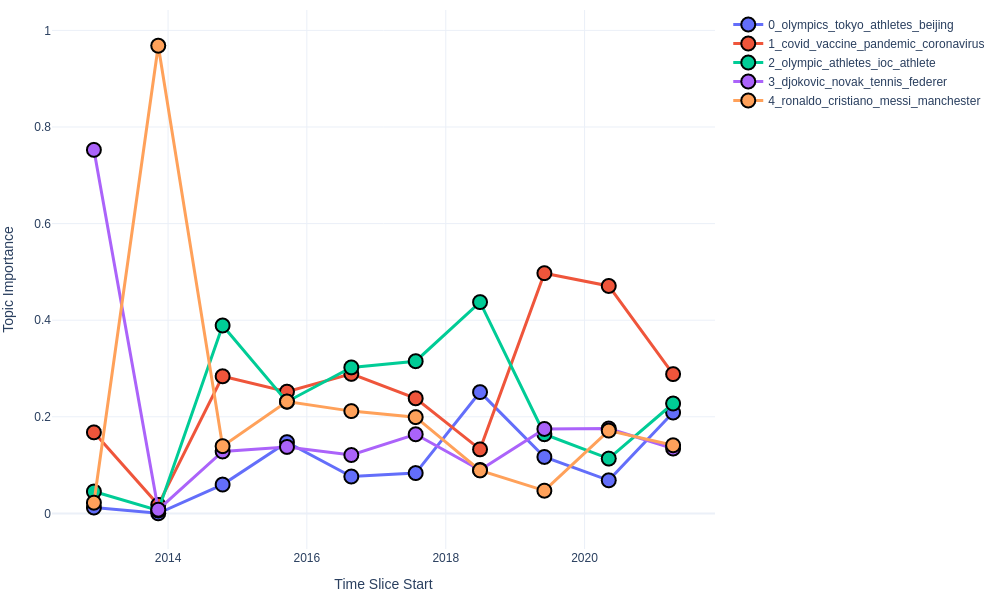

KeyNMF
KeyNMF is a topic model that relies on contextually sensitive embeddings for keyword retrieval and term importance estimation, while taking inspiration from classical matrix-decomposition approaches for extracting topics.

Here's an example of how you can fit and interpret a KeyNMF model in the easiest way.
from turftopic import KeyNMF
model = KeyNMF(10, top_n=6)
model.fit(corpus)
model.print_topics()
Keyword Extraction
The first step of the process is gaining enhanced representations of documents by using contextual embeddings. Both the documents and the vocabulary get encoded with the same sentence encoder. Keywords are assigned to each document based on the cosine similarity of the document embedding to the embedded words in the document. Only the top K words with positive cosine similarity to the document are kept. These keywords are then arranged into a document-term importance matrix where each column represents a keyword that was encountered in at least one document, and each row is a document. The entries in the matrix are the cosine similarities of the given keyword to the document in semantic space.
-
For each document \(d\):
- Let \(x_d\) be the document's embedding produced with the encoder model.
-
For each word \(w\) in the document \(d\):
- Let \(v_w\) be the word's embedding produced with the encoder model.
- Calculate cosine similarity between word and document
\[ \text{sim}(d, w) = \frac{x_d \cdot v_w}{||x_d|| \cdot ||v_w||} \] -
Let \(K_d\) be the set of \(N\) keywords with the highest cosine similarity to document \(d\).
\[ K_d = \text{argmax}_{K^*} \sum_{w \in K^*}\text{sim}(d,w)\text{, where } |K_d| = N\text{, and } \\ w \in d \] -
Arrange positive keyword similarities into a keyword matrix \(M\) where the rows represent documents, and columns represent unique keywords.
\[ M_{dw} = \begin{cases} \text{sim}(d,w), & \text{if } w \in K_d \text{ and } \text{sim}(d,w) > 0 \\ 0, & \text{otherwise}. \end{cases} \]
You can do this step manually if you want to precompute the keyword matrix. Keywords are represented as dictionaries mapping words to keyword importances.
model.extract_keywords(["Cars are perhaps the most important invention of the last couple of centuries. They have revolutionized transportation in many ways."])
[{'transportation': 0.44713873,
'invention': 0.560524,
'cars': 0.5046208,
'revolutionized': 0.3339205,
'important': 0.21803442}]
A precomputed Keyword matrix can also be used to fit a model:
keyword_matrix = model.extract_keywords(corpus)
model.fit(None, keywords=keyword_matrix)
Topic Discovery
Topics in this matrix are then discovered using Non-negative Matrix Factorization. Essentially the model tries to discover underlying dimensions/factors along which most of the variance in term importance can be explained.
-
Decompose \(M\) with non-negative matrix factorization: \(M \approx WH\), where \(W\) is the document-topic matrix, and \(H\) is the topic-term matrix. Non-negative Matrix Factorization is done with the coordinate-descent algorithm, minimizing square loss:
\[ L(W,H) = ||M - WH||^2 \]
You can fit KeyNMF on the raw corpus, with precomputed embeddings or with precomputed keywords.
# Fitting just on the corpus
model.fit(corpus)
# Fitting with precomputed embeddings
from sentence_transformers import SentenceTransformer
trf = SentenceTransformer("all-MiniLM-L6-v2")
embeddings = trf.encode(corpus)
model = KeyNMF(10, encoder=trf)
model.fit(corpus, embeddings=embeddings)
# Fitting with precomputed keyword matrix
keyword_matrix = model.extract_keywords(corpus)
model.fit(None, keywords=keyword_matrix)
Dynamic Topic Modeling
KeyNMF is also capable of modeling topics over time. This happens by fitting a KeyNMF model first on the entire corpus, then fitting individual topic-term matrices using coordinate descent based on the document-topic and document-term matrices in the given time slices.
- Compute keyword matrix \(M\) for the whole corpus.
- Decompose \(M\) with non-negative matrix factorization: \(M \approx WH\).
-
For each time slice \(t\):
- Let \(W_t\) be the document-topic proportions for documents in time slice \(t\), and \(M_t\) be the keyword matrix for words in time slice \(t\).
- Obtain the topic-term matrix for the time slice, by minimizing square loss using coordinate descent and fixing \(W_t\):
\[ H_t = \text{argmin}_{H^{*}} ||M_t - W_t H^{*}||^2 \]
Here's an example of using KeyNMF in a dynamic modeling setting:
from datetime import datetime
from turftopic import KeyNMF
corpus: list[str] = []
timestamps: list[datetime] = []
model = KeyNMF(5, top_n=5, random_state=42)
document_topic_matrix = model.fit_transform_dynamic(
corpus, timestamps=timestamps, bins=10
)
You can use the print_topics_over_time() method for producing a table of the topics over the generated time slices.
This example uses CNN news data.
model.print_topics_over_time()
| Time Slice | 0_olympics_tokyo_athletes_beijing | 1_covid_vaccine_pandemic_coronavirus | 2_olympic_athletes_ioc_athlete | 3_djokovic_novak_tennis_federer | 4_ronaldo_cristiano_messi_manchester |
|---|---|---|---|---|---|
| 2012 12 06 - 2013 11 10 | genocide, yugoslavia, karadzic, facts, cnn | cnn, russia, chechnya, prince, merkel | france, cnn, francois, hollande, bike | tennis, tournament, wimbledon, grass, courts | beckham, soccer, retired, david, learn |
| 2013 11 10 - 2014 10 14 | keith, stones, richards, musician, author | georgia, russia, conflict, 2008, cnn | civil, rights, hear, why, should | cnn, kidneys, traffickers, organ, nepal | ronaldo, cristiano, goalscorer, soccer, player |
| 2014 10 14 - 2015 09 18 | ethiopia, brew, coffee, birthplace, anderson | climate, sutter, countries, snapchat, injustice | women, guatemala, murder, country, worst | cnn, climate, oklahoma, women, topics | sweden, parental, dads, advantage, leave |
| 2015 09 18 - 2016 08 22 | snow, ice, winter, storm, pets | climate, crisis, drought, outbreaks, syrian | women, vulnerabilities, frontlines, countries, marcelas | cnn, warming, climate, sutter, theresa | sutter, band, paris, fans, crowd |
| 2016 08 22 - 2017 07 26 | derby, epsom, sporting, race, spectacle | overdoses, heroin, deaths, macron, emmanuel | fear, died, indigenous, people, arthur | siblings, amnesia, palombo, racial, mh370 | bobbi, measles, raped, camp, rape |
| 2017 07 26 - 2018 06 30 | her, percussionist, drums, she, deported | novichok, hurricane, hospital, deaths, breathing | women, day, celebrate, taliban, international | abuse, harassment, cnn, women, pilgrimage | maradona, argentina, history, jadon, rape |
| 2018 06 30 - 2019 06 03 | athletes, teammates, celtics, white, racism | pope, archbishop, francis, vigano, resignation | racism, athletes, teammates, celtics, white | golf, iceland, volcanoes, atlantic, ocean | rape, sudanese, racist, women, soldiers |
| 2019 06 03 - 2020 05 07 | esports, climate, ice, racers, culver | esports, coronavirus, pandemic, football, teams | racers, women, compete, zone, bery | serena, stadium, sasha, final, naomi | kobe, bryant, greatest, basketball, influence |
| 2020 05 07 - 2021 04 10 | olympics, beijing, xinjiang, ioc, boycott | covid, vaccine, coronavirus, pandemic, vaccination | olympic, japan, medalist, canceled, tokyo | djokovic, novak, tennis, federer, masterclass | ronaldo, cristiano, messi, juventus, barcelona |
| 2021 04 10 - 2022 03 16 | olympics, tokyo, athletes, beijing, medal | covid, pandemic, vaccine, vaccinated, coronavirus | olympic, athletes, ioc, medal, athlete | djokovic, novak, tennis, wimbledon, federer | ronaldo, cristiano, messi, manchester, scored |
You can also display the topics over time on an interactive HTML figure. The most important words for topics get revealed by hovering over them.
You will need to install Plotly for this to work.
pip install plotly
model.plot_topics_over_time(top_k=5)

Online Topic Modeling
KeyNMF can also be fitted in an online manner. This is done by fitting NMF with batches of data instead of the whole dataset at once.
Use Cases:
- You can use online fitting when you have very large corpora at hand, and it would be impractical to fit a model on it at once.
- You have new data flowing in constantly, and need a model that can morph the topics based on the incoming data. You can also do this in a dynamic fashion.
- You need to finetune an already fitted topic model to novel data.
Batch Fitting
We will use the batching function from the itertools recipes to produce batches.
In newer versions of Python (>=3.12) you can just
from itertools import batched
def batched(iterable, n: int):
"Batch data into lists of length n. The last batch may be shorter."
if n < 1:
raise ValueError("n must be at least one")
it = iter(iterable)
while batch := tuple(itertools.islice(it, n)):
yield batch
You can fit a KeyNMF model to a very large corpus in batches like so:
from turftopic import KeyNMF
model = KeyNMF(10, top_n=5)
corpus = ["some string", "etc", ...]
for batch in batched(corpus, 200):
batch = list(batch)
model.partial_fit(batch)
Precomputing the Keyword Matrix
If you desire the best results, it might make sense for you to go over the corpus in multiple epochs:
for epoch in range(5):
for batch in batched(corpus, 200):
model.partial_fit(batch)
This is mildly inefficient, however, as the texts need to be encoded on every epoch, and keywords need to be extracted.
In such scenarios you might want to precompute and maybe even save the extracted keywords to disk using the extract_keywords() method.
Keywords are represented as dictionaries mapping words to keyword importances.
model.extract_keywords(["Cars are perhaps the most important invention of the last couple of centuries. They have revolutionized transportation in many ways."])
[{'transportation': 0.44713873,
'invention': 0.560524,
'cars': 0.5046208,
'revolutionized': 0.3339205,
'important': 0.21803442}]
You can extract keywords in batches and save them to disk to a file format of your choice. In this example I will use NDJSON because of its simplicity.
import json
from pathlib import Path
from typing import Iterable
# Here we are saving keywords to a JSONL/NDJSON file
with Path("keywords.jsonl").open("w") as keyword_file:
# Doing this in batches is much more efficient than individual texts because
# of the encoding.
for batch in batched(corpus, 200):
batch_keywords = model.extract_keywords(batch)
# We serialize each
for keywords in batch_keywords:
keyword_file.write(json.dumps(keywords) + "\n")
def stream_keywords() -> Iterable[dict[str, float]]:
"""This function streams keywords from the file."""
with Path("keywords.jsonl").open() as keyword_file:
for line in keyword_file:
yield json.loads(line.strip())
for epoch in range(5):
keyword_stream = stream_keywords()
for keyword_batch in batched(keyword_stream, 200):
model.partial_fit(keywords=keyword_batch)
Dynamic Online Topic Modeling
KeyNMF can be online fitted in a dynamic manner as well. This is useful when you have large corpora of text over time, or when you want to fit the model on future information flowing in and want to analyze the topics' changes over time.
When using dynamic online topic modeling you have to predefine the time bins that you will use, as the model can't infer these from the data.
from datetime import datetime
# We will bin by years in a period of 2020-2030
bins = [datetime(year=y, month=1, day=1) for y in range(2020, 2030 + 2, 1)]
You can then online fit a dynamic topic model with partial_fit_dynamic().
model = KeyNMF(5, top_n=10)
corpus: list[str] = [...]
timestamps: list[datetime] = [...]
for batch in batched(zip(corpus, timestamps)):
text_batch, ts_batch = zip(*batch)
model.partial_fit_dynamic(text_batch, timestamps=ts_batch, bins=bins)
Hierarchical Topic Modeling
When you suspect that subtopics might be present in the topics you find with the model, KeyNMF can be used to discover topics further down the hierarchy.
This is done by utilising a special case of weighted NMF, where documents are weighted by how high they score on the parent topic. In other words:
- Decompose keyword matrix \(M \approx WH\)
- To find subtopics in topic \(j\), define document weights \(w\) as the \(j\)th column of \(W\).
- Estimate subcomponents with wNMF \(M \approx \mathring{W} \mathring{H}\) with document weight \(w\)
- Initialise \(\mathring{H}\) and \(\mathring{W}\) randomly.
- Perform multiplicative updates until convergence.
\(\mathring{W}^T = \mathring{W}^T \odot \frac{\mathring{H} \cdot (M^T \odot w)}{\mathring{H} \cdot \mathring{H}^T \cdot (\mathring{W}^T \odot w)}\)
\(\mathring{H}^T = \mathring{H}^T \odot \frac{ (M^T \odot w)\cdot \mathring{W}}{\mathring{H}^T \cdot (\mathring{W}^T \odot w) \cdot \mathring{W}}\)
- To sufficiently differentiate the subcomponents from each other a pseudo-c-tf-idf weighting scheme is applied to \(\mathring{H}\):
- \(\mathring{H} = \mathring{H}_{ij} \odot ln(1 + \frac{A}{1+\sum_k \mathring{H}_{kj}})\), where \(A\) is the average of all elements in \(\mathring{H}\)
To create a hierarchical model, you can use the hierarchy property of the model.
# This divides each of the topics in the model to 3 subtopics.
model.hierarchy.divide_children(n_subtopics=3)
print(model.hierarchy)
├── 0: windows, dos, os, disk, card, drivers, file, pc, files, microsoft
│ ├── 0.0: dos, file, disk, files, program, windows, disks, shareware, norton, memory
│ ├── 0.1: os, unix, windows, microsoft, apps, nt, ibm, ms, os2, platform
│ └── 0.2: card, drivers, monitor, driver, vga, ram, motherboard, cards, graphics, ati
└── 1: atheism, atheist, atheists, religion, christians, religious, belief, christian, god, beliefs
. ├── 1.0: atheism, alt, newsgroup, reading, faq, islam, questions, read, newsgroups, readers
. ├── 1.1: atheists, atheist, belief, theists, beliefs, religious, religion, agnostic, gods, religions
. └── 1.2: morality, bible, christian, christians, moral, christianity, biblical, immoral, god, religion
For a detailed tutorial on hierarchical modeling click here.
Considerations
Strengths
- Stability, Robustness and Quality: KeyNMF extracts very clean topics even when a lot of noise is present in the corpus, and the model's performance remains relatively stable across domains.
- Scalability: The model can be fitted in an online fashion, and we recommend that you choose KeyNMF when the number of documents is large (over 100 000).
- Fail Safe and Adjustable: Since the modelling process consists of multiple easily separable steps it is easy to repeat one if something goes wrong. This also makes it an ideal choice for production usage.
- Can capture multiple topics in a document.
Weaknesses
- Lack of Nuance: Since only the top K keywords are considered and used for topic extraction some of the nuances, especially in long texts might get lost. We therefore recommend that you scale K with the average length of the texts you're working with. For tweets it might be worth it to scale it down to 5, while with longer documents, a larger number (let's say 50) might be advisable.
- Practitioners have to choose the number of topics a priori.
API Reference
turftopic.models.keynmf.KeyNMF
Bases: ContextualModel, DynamicTopicModel
Extracts keywords from documents based on semantic similarity of term encodings to document encodings. Topics are then extracted with non-negative matrix factorization from keywords' proximity to documents.
from turftopic import KeyNMF
corpus: list[str] = ["some text", "more text", ...]
model = KeyNMF(10, top_n=10).fit(corpus)
model.print_topics()
Parameters:
| Name | Type | Description | Default |
|---|---|---|---|
n_components |
int
|
Number of topics. |
required |
encoder |
Union[Encoder, str]
|
Model to encode documents/terms, all-MiniLM-L6-v2 is the default. |
'sentence-transformers/all-MiniLM-L6-v2'
|
vectorizer |
Optional[CountVectorizer]
|
Vectorizer used for term extraction. Can be used to prune or filter the vocabulary. |
None
|
top_n |
int
|
Number of keywords to extract for each document. |
25
|
random_state |
Optional[int]
|
Random state to use so that results are exactly reproducible. |
None
|
Source code in turftopic/models/keynmf.py
22 23 24 25 26 27 28 29 30 31 32 33 34 35 36 37 38 39 40 41 42 43 44 45 46 47 48 49 50 51 52 53 54 55 56 57 58 59 60 61 62 63 64 65 66 67 68 69 70 71 72 73 74 75 76 77 78 79 80 81 82 83 84 85 86 87 88 89 90 91 92 93 94 95 96 97 98 99 100 101 102 103 104 105 106 107 108 109 110 111 112 113 114 115 116 117 118 119 120 121 122 123 124 125 126 127 128 129 130 131 132 133 134 135 136 137 138 139 140 141 142 143 144 145 146 147 148 149 150 151 152 153 154 155 156 157 158 159 160 161 162 163 164 165 166 167 168 169 170 171 172 173 174 175 176 177 178 179 180 181 182 183 184 185 186 187 188 189 190 191 192 193 194 195 196 197 198 199 200 201 202 203 204 205 206 207 208 209 210 211 212 213 214 215 216 217 218 219 220 221 222 223 224 225 226 227 228 229 230 231 232 233 234 235 236 237 238 239 240 241 242 243 244 245 246 247 248 249 250 251 252 253 254 255 256 257 258 259 260 261 262 263 264 265 266 267 268 269 270 271 272 273 274 275 276 277 278 279 280 281 282 283 284 285 286 287 288 289 290 291 292 293 294 295 296 297 298 299 300 301 302 303 304 305 306 307 308 309 310 311 312 313 314 315 316 317 318 319 320 321 322 323 324 325 326 327 328 329 330 331 332 333 334 335 336 337 338 339 340 341 342 343 344 345 346 347 348 349 350 351 352 353 354 355 356 357 358 359 360 361 362 363 364 365 366 367 368 369 370 371 372 373 374 375 376 377 378 379 380 381 382 383 384 385 386 387 388 389 390 391 392 393 394 395 396 397 398 399 400 401 402 403 404 405 406 407 408 409 410 411 412 413 414 415 416 417 418 419 420 421 422 423 424 425 426 427 428 429 430 431 432 | |
extract_keywords(batch_or_document, embeddings=None)
Extracts keywords from a document or a batch of documents.
Parameters:
| Name | Type | Description | Default |
|---|---|---|---|
batch_or_document |
Union[str, list[str]]
|
A single document or a batch of documents. |
required |
embeddings |
Optional[ndarray]
|
Precomputed document embeddings. |
None
|
Source code in turftopic/models/keynmf.py
82 83 84 85 86 87 88 89 90 91 92 93 94 95 96 97 98 99 100 | |
fit(raw_documents=None, y=None, embeddings=None, keywords=None)
Fits topic model and returns topic importances for documents.
Parameters:
| Name | Type | Description | Default |
|---|---|---|---|
raw_documents |
Documents to fit the model on. |
None
|
|
embeddings |
Optional[ndarray]
|
Precomputed document encodings. |
None
|
keywords |
Optional[list[dict[str, float]]]
|
Precomputed keyword dictionaries. |
None
|
Source code in turftopic/models/keynmf.py
193 194 195 196 197 198 199 200 201 202 203 204 205 206 207 208 209 210 211 212 | |
fit_transform(raw_documents=None, y=None, embeddings=None, keywords=None)
Fits topic model and returns topic importances for documents.
Parameters:
| Name | Type | Description | Default |
|---|---|---|---|
raw_documents |
Documents to fit the model on. |
None
|
|
embeddings |
Optional[ndarray]
|
Precomputed document encodings. |
None
|
keywords |
Optional[list[dict[str, float]]]
|
Precomputed keyword dictionaries. |
None
|
Returns:
| Type | Description |
|---|---|
ndarray of shape (n_dimensions, n_topics)
|
Document-topic matrix. |
Source code in turftopic/models/keynmf.py
148 149 150 151 152 153 154 155 156 157 158 159 160 161 162 163 164 165 166 167 168 169 170 171 172 173 174 175 176 177 178 179 180 181 182 183 184 185 186 187 188 189 190 191 | |
partial_fit(raw_documents=None, embeddings=None, keywords=None)
Online fits KeyNMF on a batch of documents.
Parameters:
| Name | Type | Description | Default |
|---|---|---|---|
raw_documents |
Optional[list[str]]
|
Documents to fit the model on. |
None
|
embeddings |
Optional[ndarray]
|
Precomputed document encodings. |
None
|
keywords |
Optional[list[dict[str, float]]]
|
Precomputed keyword dictionaries. |
None
|
Source code in turftopic/models/keynmf.py
249 250 251 252 253 254 255 256 257 258 259 260 261 262 263 264 265 266 267 268 269 270 271 272 273 274 275 276 277 278 279 280 281 282 283 284 285 286 287 288 | |
partial_fit_dynamic(raw_documents=None, timestamps=None, embeddings=None, keywords=None, bins=10)
Online fits Dynamic KeyNMF on a batch of documents.
Parameters:
| Name | Type | Description | Default |
|---|---|---|---|
raw_documents |
Documents to fit the model on. |
None
|
|
embeddings |
Optional[ndarray]
|
Precomputed document encodings. |
None
|
keywords |
Optional[list[dict[str, float]]]
|
Precomputed keyword dictionaries. |
None
|
timestamps |
Optional[list[datetime]]
|
List of timestamps for the batch. |
None
|
bins |
Union[int, list[datetime]]
|
Explicit time bin edges for the dynamic model. |
10
|
Source code in turftopic/models/keynmf.py
376 377 378 379 380 381 382 383 384 385 386 387 388 389 390 391 392 393 394 395 396 397 398 399 400 401 402 403 404 405 406 407 408 409 410 411 412 413 414 415 416 417 418 419 420 421 422 423 424 425 426 427 428 429 430 431 432 | |
transform(raw_documents=None, embeddings=None, keywords=None)
Infers topic importances for new documents based on a fitted model.
Parameters:
| Name | Type | Description | Default |
|---|---|---|---|
raw_documents |
Documents to fit the model on. |
None
|
|
embeddings |
Optional[ndarray]
|
Precomputed document encodings. |
None
|
keywords |
Optional[list[dict[str, float]]]
|
Precomputed keyword dictionaries. |
None
|
Returns:
| Type | Description |
|---|---|
ndarray of shape (n_dimensions, n_topics)
|
Document-topic matrix. |
Source code in turftopic/models/keynmf.py
217 218 219 220 221 222 223 224 225 226 227 228 229 230 231 232 233 234 235 236 237 238 239 240 241 242 243 244 245 246 247 | |
vectorize(raw_documents=None, embeddings=None, keywords=None)
Creates document-term-matrix from documents.
Source code in turftopic/models/keynmf.py
102 103 104 105 106 107 108 109 110 111 112 113 | |